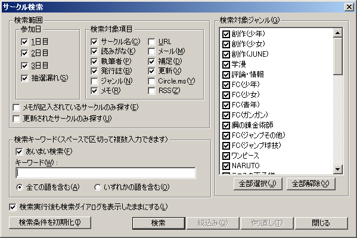
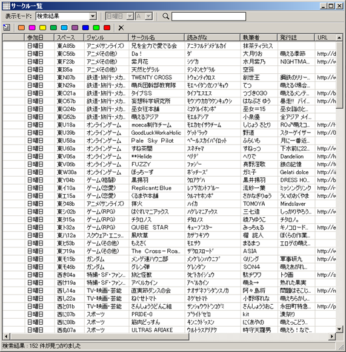
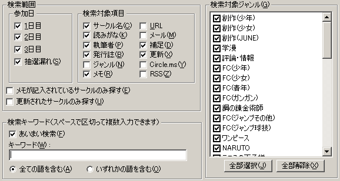
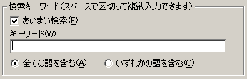
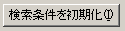

検索ダイアログでは、各種条件を与えてそれらに一致するサークルを検索することができます。
検索ダイアログは、メインメニューの「検索」メニューから呼び出します。
検索結果は、サークル一覧ウィンドウに表示されます。


検索対象となる範囲を指定し、データを絞り込みます。
「参加日」「検索対象項目」「検索対象ジャンル」の3グループについてそれぞれ設定できます。
「検索対象ジャンル」は検索範囲を指定ジャンルコードを持つサークルに限定します。「検索対象項目」の「ジャンル」は、チェックすると、キーワード検索で該当「ジャンル名」が検索対象に追加されます
各グループ内のすべての項目が未チェックの場合、そのグループ項目についての絞込みは行いません（＝すべてが検索対象となります）。例えば、「参加日」がすべて未チェックだった場合、全ての日付が検索対象となります。
「メモが記入されているサークルのみ探す」にチェックを入れると、サークルメモ欄に記入を行ったサークルのみが検索対象となります。メモした箇所が分からなくなった場合などに使用してください。
「更新されたサークルのみ探す」にチェックを入れると、サークルデータがネットワーク更新されたサークルのみが検索対象となります。情報更新されたサークルを確認したい場合などに使用してください。

検索する文字列を入力します。スペースで区切って複数の単語を入力することができます。
複数の単語を入力した場合は、「全ての語を含む」「いずれかの語を含む」のラジオボタンで検索式を決定してください。
また、「あいまい検索」にチェックを入れておくと、完全に一致していなくても似たような単語を含めば検索結果に表示します。
目的のサークルがうまく見つからない場合などに使用してみてください。

「検索条件を初期化」ボタンを押すと、各チェックボックスなどを初期状態に戻します。
「検索実行後も検索ダイアログを表示したままにする」をチェックしておくと、検索の実行後もダイアログが表示されたままになります。
また、この状態では、検索ダイアログ表示中もサークルをチェックリストに登録することも可能です。
検索を行って見つかったサークルを次々と登録していくような場合に便利でしょう。